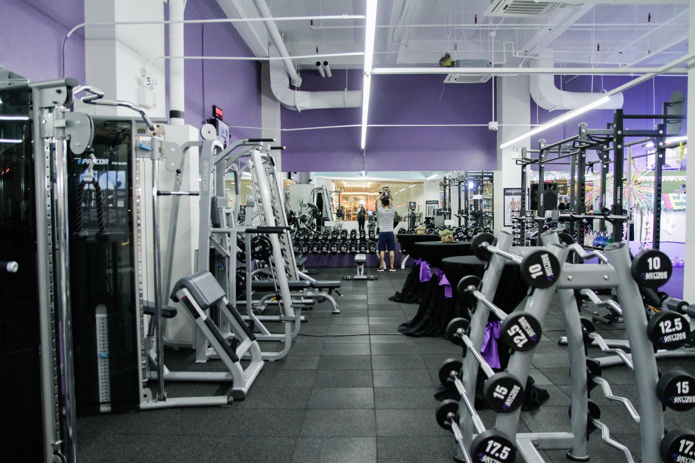

<ion-header [translucent]="true" class="ion-no-border">
  <ion-toolbar class = "bg-app">
    <ion-buttons slot="end">
      <ion-icon (click)="goToSearchPage()" class="icon-search" name="search-outline"></ion-icon>
    </ion-buttons>
  </ion-toolbar>
</ion-header>

<ion-content [fullscreen]="true" class="bg-app ion-padding">
<!---
  <ion-slides>
    <ion-slide>
      
    </ion-slide>
    <ion-slide>
      
    </ion-slide>
    <ion-slide>
      
    </ion-slide>
  </ion-slides>
<br> --->
  <ion-text class="encabezado" color="primary">
    Categorías
  </ion-text>
  <ion-slides [options] ="slideOpts">
      <ion-slide (click)="goToCategoriesPage()" *ngFor="let categoria of categorias" class="slide">
        
        <ion-text class="text-cuerda">
          {{ categoria.nombreCategoria }}
        </ion-text>
      </ion-slide>
  </ion-slides>
<br>
  <ion-text class="encabezado" color="primary">
    Listado de Rutinas
  </ion-text>

  <app-listado-rutinas [listadoRutinas]="this.listadoRutinas"></app-listado-rutinas>

</ion-content>
